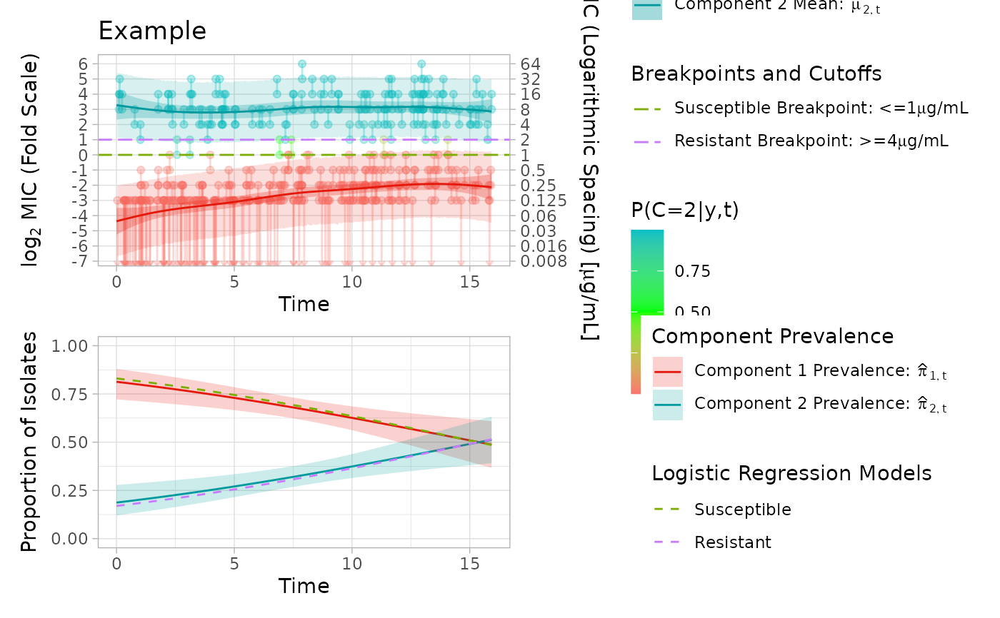

Takes output of a fit_EM() run and plots it. Logistic regression fitting is in progress (currently does not accept covariates and non-linear term must be "t")
Usage
plot_fm(
output,
title = "",
add_log_reg = FALSE,
ecoff = NA,
s_breakpoint = NA,
r_breakpoint = NA,
visual_split = NA,
use_prior_step = FALSE,
range_zoom = FALSE,
plot_range = NULL,
start_date = 0,
x_axis_t_breaks = NULL,
skip = NULL
)Arguments
- output
List, output of a fit_EM()
- title
String, title of plot
- add_log_reg
Logical, add a curve to the pi (component weight) plot showing proportion resistant and susceptible
- ecoff
Numeric or String, represents an ECOFF on the MIC Scale to define the upper limit of the WT component, A number is interpreted as WT being <= ECOFF.
- s_breakpoint
String, represents S breakpoint (e.g. <= 2) on MIC scale (not log2 scale)
- r_breakpoint
String, represents R breakpoint (e.g. >= 32) on MIC scale (not log2 scale)
- visual_split
Numeric or String, represents a visual split point on the MIC scale to define the upper limit of the WT component. A number is interpreted as WT being <= visual_split
- use_prior_step
Logical, if one mu model did not converge, can try plotting mu models from previous step by setting this to TRUE
- range_zoom
Logical, zoom y axis to range of tested concentrations
- plot_range
Vector of length 2, minimum and maximum values of y axis of plot
- start_date
Integer, value at which x axis should start (year).
- x_axis_t_breaks
Numerical vector, vector of values on the scale of t, the time variable in years from the start of the study. Helpful to use seq(0,t_max, by = spacing) where t_max is the length of study period and spacing is how many years to separate major ticks by
- skip
Vector, vector of either "ecoff", "bkpts", or c("ecoff", "bkpts"), to describe any splits for which logistic regression should not be plotted if another logistic regression is being plotted. If only one divider is used, just turn off add_log_reg
Examples
data = simulate_mics()
output = fit_EM(model = "pspline",
approach = "full",
pre_set_degrees = c(4,4),
visible_data = data,
non_linear_term = "t",
covariates = NULL,
pi_formula = c == "2" ~ s(t),
max_it = 300,
ncomp = 2,
tol_ll = 1e-6,
pi_link = "logit",
verbose = 1,
model_coefficient_tolerance = 0.00001,
initial_weighting = 3,
sd_initial = 0.2
)
#> Stopped on combined LL and parameters
plot_fm(output = output, title = "Example", add_log_reg = TRUE, s_breakpoint = "<=1", r_breakpoint = ">=4")
#> Scale for y is already present.
#> Adding another scale for y, which will replace the existing scale.
#> Scale for y is already present.
#> Adding another scale for y, which will replace the existing scale.
